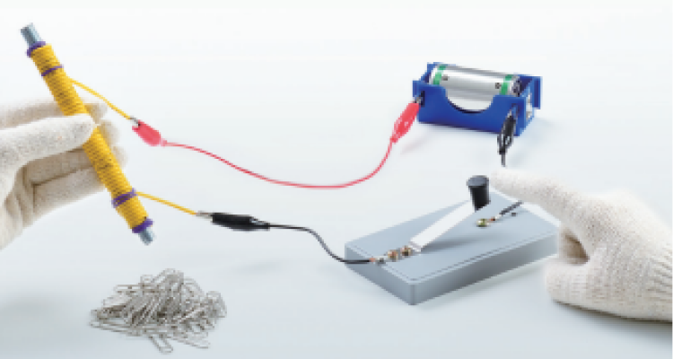
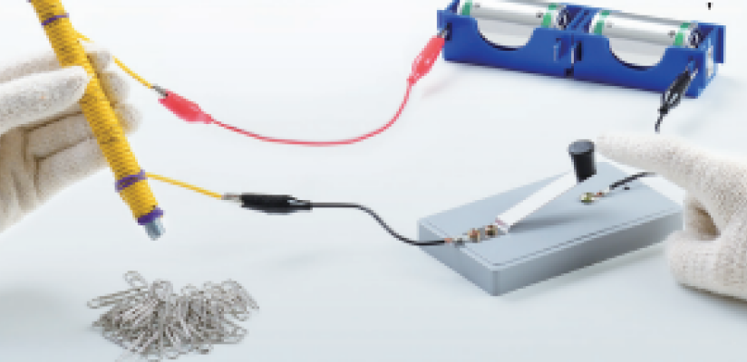

1번
다음은 전자석의 성질을 알아보기 위한 실험 장면입니다. 이 실험의 목적을 올바르게 말한 학생을 쓰세요.
 
개요
수희
전지의 방향에 따라 극의 방향이 바뀌는 전자석의 성질을 알아보기 위한 실험이야
도준
전기가 흐를 때만 자석의 성질이 나타나는 전자석의 특징을 알아보기 위한 실험이야
서우
전지의 개수를 다르게 하여 전자석의 극의 방향이 바뀌는 것을 알아보기 위한 실험이야
지민
전지의 개수를 다르게 하여 전자석의 세기가 어떻게 달라지는지 알아보기 위한 실험이야